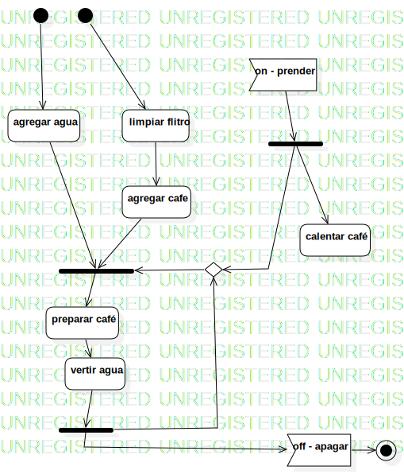

Activity1
UMLActivity
Untitled
::
Activity1
Description
none
Diagrams

ActivityDiagram1
Nodes
agregar agua
limpiar flitro
agregar cafe
preparar café
vertir agua
ForkNode1
on - prender
off - apagar
calentar café
DecisionNode1
JoinNode1
ActivityFinalNode1
ForkNode2
DecisionNode2
InitialNode1
InitialNode2
ForkNode3
InitialNode3
Edges
(agregar agua→ForkNode1)
(limpiar flitro→agregar cafe)
(agregar cafe→ForkNode1)
(preparar café→vertir agua)
(ForkNode1→preparar café)
(on - prender→JoinNode1)
(JoinNode1→calentar café)
(JoinNode1→DecisionNode1)
(DecisionNode1→ForkNode1)
(vertir agua→DecisionNode1)
(off - apagar→ActivityFinalNode1)
(vertir agua→ForkNode2)
(ForkNode2→DecisionNode1)
(ForkNode2→off - apagar)
(ForkNode2→DecisionNode2)
(InitialNode3→agregar agua)
(InitialNode1→limpiar flitro)
(DecisionNode2→ForkNode3)
(InitialNode1→DecisionNode2)
Properties
Name
Value
name
Activity1
stereotype
null
visibility
public
isReentrant
true
isReadOnly
false
isSingleExecution
false
Owned Elements
ActivityDiagram1